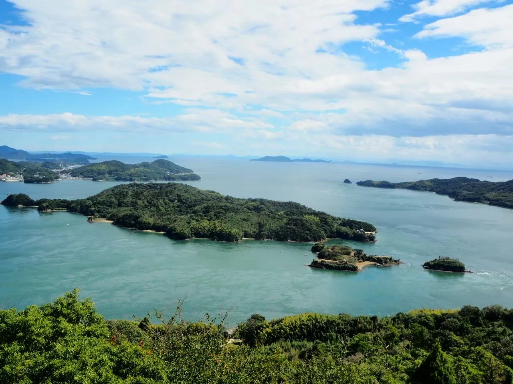
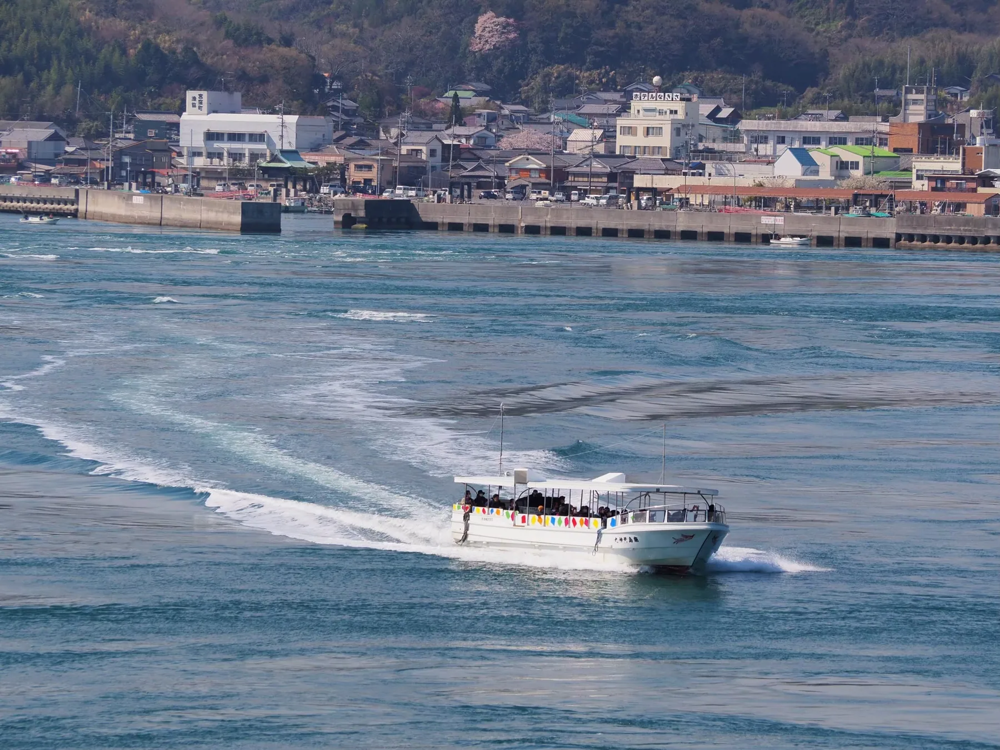
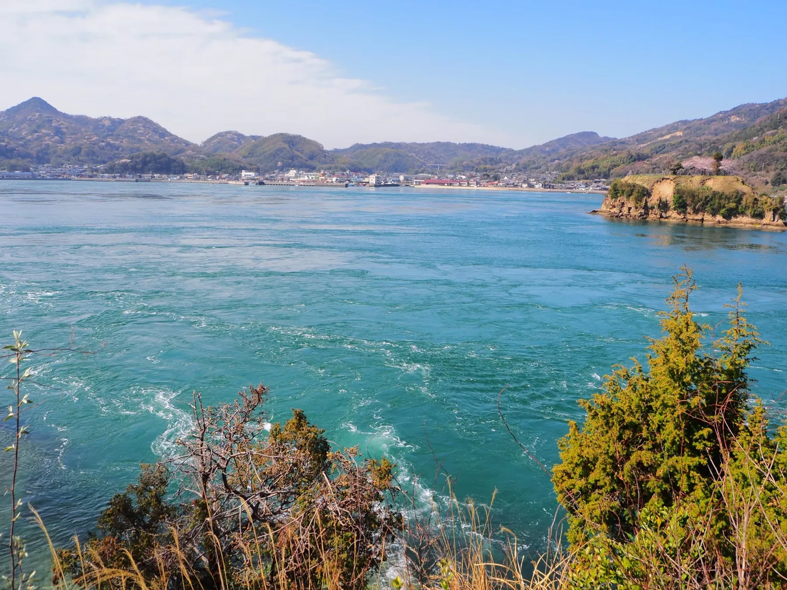
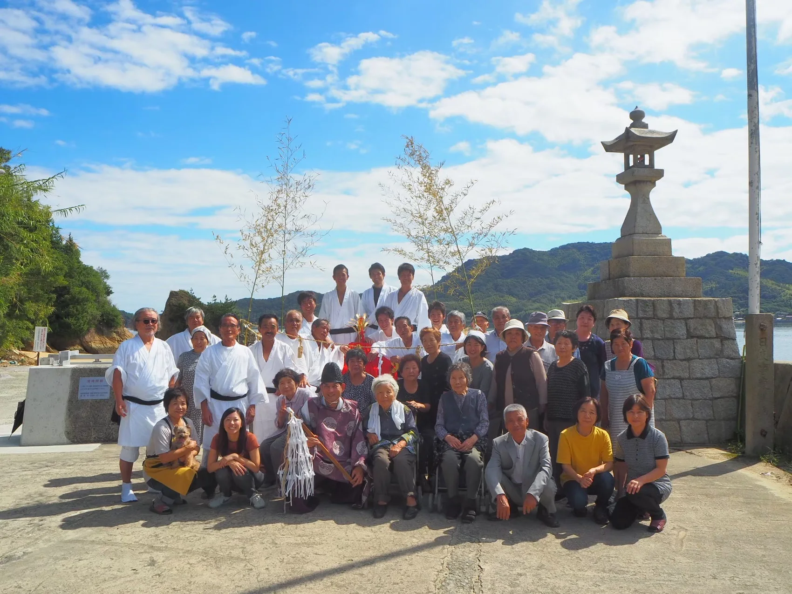
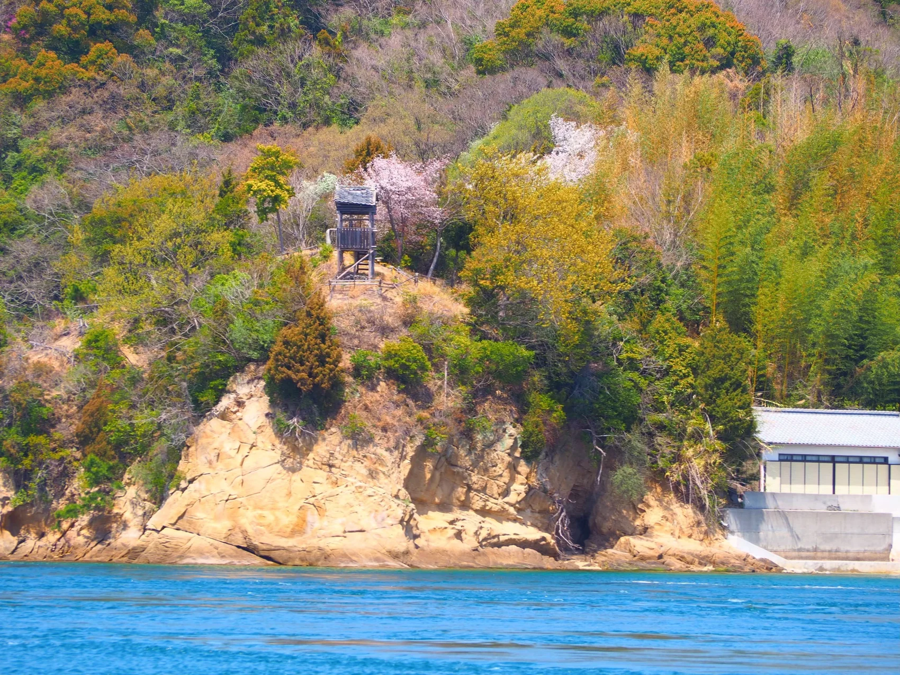
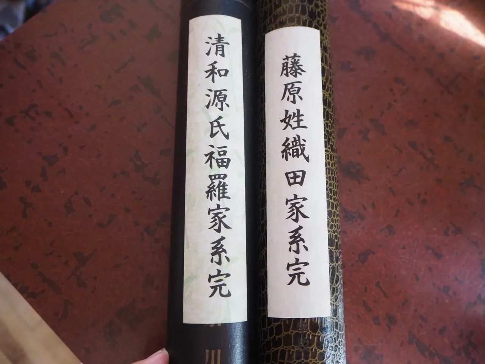
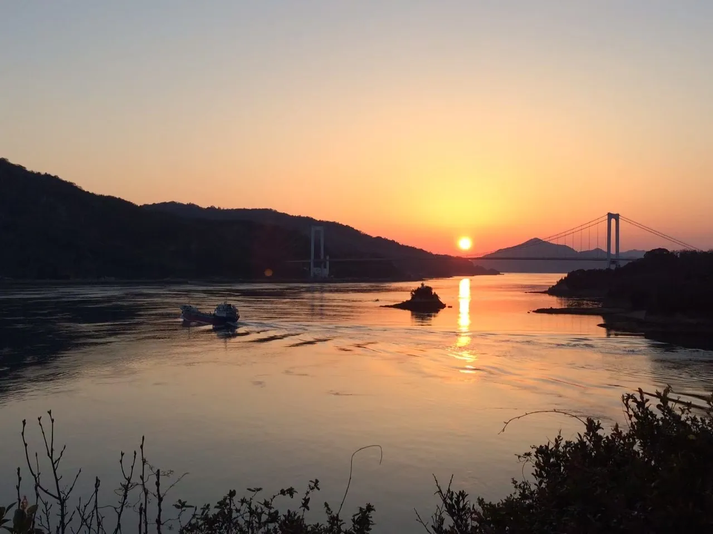
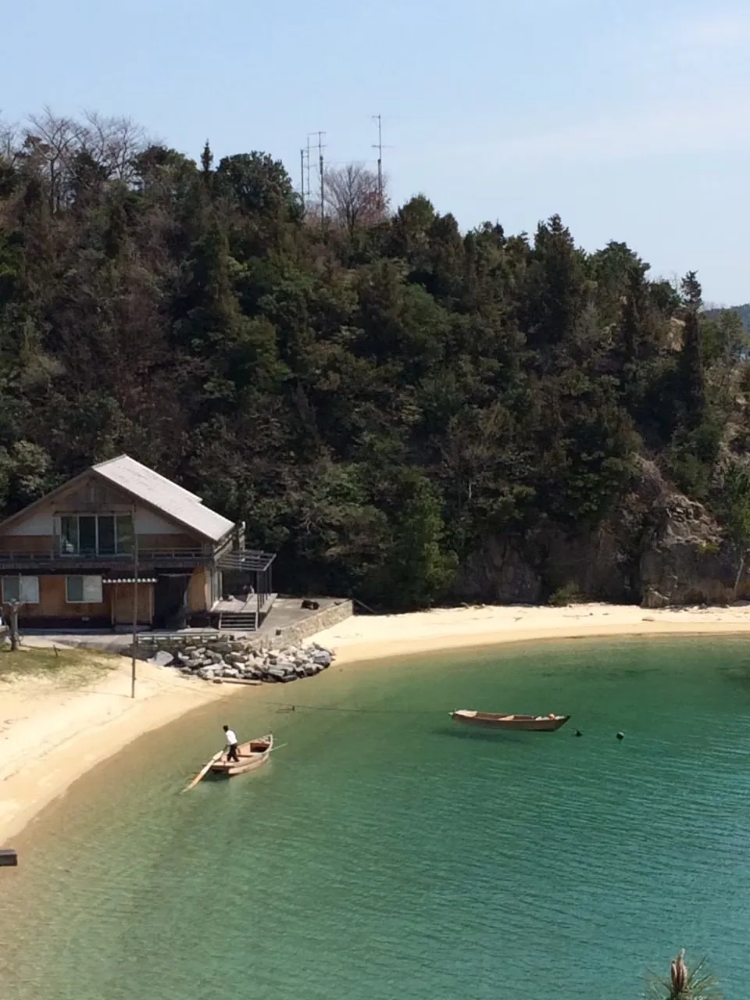

THE ISLAND
島時間を、楽しもう。
鵜島は、愛媛県今治市にある瀬戸内海の島。近くには村上海賊の拠点だった能島があり、鵜島にも船づくりや海上交通に関わる歴史が伝わっています。港、集落、海辺の風景から島の暮らしを紹介します。
A LITTLE ISLAND GUIDE港から始まる、
港から始まる、
小さな島の旅。
船で島に渡ったら、まずは海辺をのんびり散歩。潮の流れ、船の行き交う景色、静かな集落。鵜島の楽しみ方は、急がないことかもしれません。
海と風景を見に行く →
01 / STORIES
もっと知りたい、鵜島のこと。
村上海賊の時代から、船の仕事、地域に受け継がれる例大祭まで。

THE SETO INLAND SEA
海を眺めて、ひと休み。

HISTORY / USHIMA
鵜島と海の歴史
鵜島のすぐ近くにある能島は、村上海賊の拠点でした。郷土史には、鵜島に造船所や船大工屋敷があったことも記されています。海を渡る船と、その船を支えた仕事から島の歴史をたどります。

CULTURE / PILGRIMAGE
島を歩いて出会う、三十三観音。
鵜島には「鵜島三十三観音」と呼ばれる信仰の文化が伝わっています。海の歴史だけではない、島の祈りと暮らしを知る入口です。現地を訪れる際は、生活の場であることに配慮しながら歩いてみてください。
三十三観音について読む →

